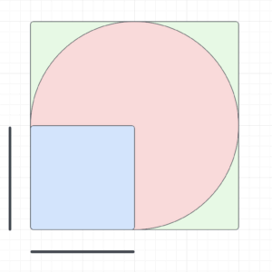
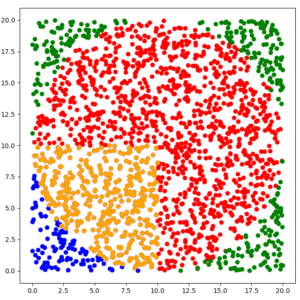
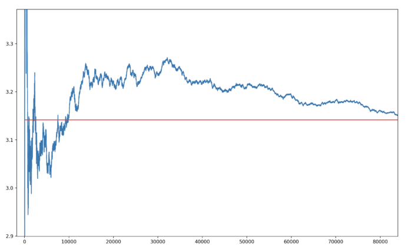
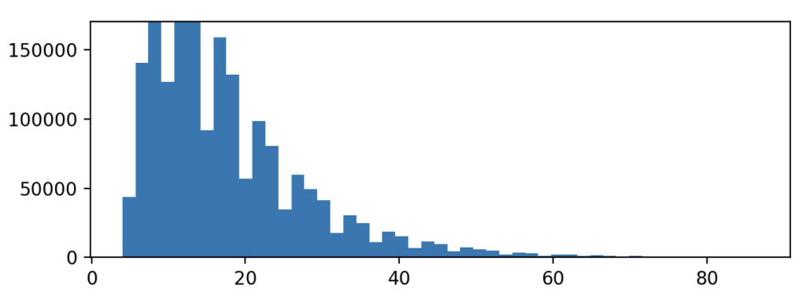

Introduction
Suppose you were flying over the Pacific and suffered a plane crash. Luckily you survived the crash and are now stranded on a deserted island. Unfortunately, you struck your head quite badly and can no longer recall the value for pi. All you have with you is a short stick, a stone and your wits to guide you. Naturally you are concerned with the most pressing problem, viz. calculating the value of pi, which you have forgotten. How can you go about doing so?
Luckily for you, there exists a solution to this problem – the Monte Carlo simulation.
The Setup
Lets start by creating a square with sides the length of the stick "r" in the sand. Next create a circle with a radius of "r". We can make the following statements;
The area of the circle = Π × r²
The area of the square = r²
Thus;
area of the circle / area of the square =
Π × r² / r² = Π
All we have to do is calculate the area of the circle and the square and we can calculate pi. Unfortunately, that is quite difficult to do. Cue the Monte Carlo simulation.
The Simulation

Steps:
- Take the stone
- Throw it up
- Each time the stone lands make a note of whether it landed in the circle or square.
Suppose you did this a few thousand times. Your final results would look something like this;
circle = 1591
square = 491
You can use the number of times that the stone fell inside the shape as a proxy for the area of the shape. This is the heart of a Monte Carlo simulation – using a random process to estimate some value. You can now calculate pi by simply dividing the one by the other.
To clarify, what we are doing here is estimating the area of a shape. This works because the probability that the stone will fall inside the shape is equal to the area of the shape.
Simulation in Python
import random
import math
# Number of points that landed in the circle or square
in_circle = 0
in_square = 0
# Number of iterations
iterations = 10000
# the radius of the circle and side of the square
r = 10
for i in range(iterations):
# randomly select 2 points between 0-20
x = random.uniform(0, 20)
y = random.uniform(0, 20)
# check if point (x,y) is in square (x < r and y < r) (bottom left corner of square is at the origin)
if x < r and y < r:
in_square += 1
# calculate the distance between point(x,y) and center of circle (r,r)
distance = math.sqrt((r - x)**2 + (r - y)**2)
# check if point (x, y) is in circle.
if distance < r:
in_circle += 1
if i % 1000 == 0:
try:
pi = in_circle / in_square
except ZeroDivisionError:
pi = 0
print('Estimated value of pi after',i,'iterations is',pi)Estimated value of pi after 0 iterations is 0
Estimated value of pi after 1000 iterations is 2.7627737226277373
Estimated value of pi after 2000 iterations is 2.911985018726592
Estimated value of pi after 3000 iterations is 2.8870967741935485
Estimated value of pi after 4000 iterations is 2.890334572490706
Estimated value of pi after 5000 iterations is 2.951367781155015
Estimated value of pi after 6000 iterations is 2.996168582375479
Estimated value of pi after 7000 iterations is 3.0482796892341844
Estimated value of pi after 8000 iterations is 3.040658276863504
Estimated value of pi after 9000 iterations is 3.0583657587548636
.
.
.
Estimated value of pi after 1999000000 iterations is 3.1414178257741354Here is a plot of the points. The points that landed in the circle are red and orange. Those that landed in the square are blue and orange, and those that landed in neither are green. (Note that it makes no difference if the circle overlaps with the square, we merely want to estimate the area of each shape.)

And now for a graph of the estimated value of pi by iteration. This graph nicely illustrates the law of large numbers. In the beginning our estimate is wildly off. Over time it converges toward pi.

Snakes and ladders
Suppose you bet on a game of snakes and ladders against somebody. Your opponent keeps winning and you suspect him of cheating. You want to calculate the probability of him finishing the game in a certain number of moves or less (you cannot remember what his dice rolls were, only the number of turns it took him to win). In order to do this you need to create a distribution of the number of moves it takes to finish the game.
The game works as follows;
- The players start at position 0
- Each player rolls a 6 sided die
- The player moves forward by the number rolled.
- If the landing square is the base of a ladder, the player is transported to the top.
- If the landing square is the top of a snake, the player is transported to the bottom.
Calculating the distribution of the number of rolls it takes to complete the game could be quite complex. (This is called a Markov chain and can be solved algebraically). Instead we can simulate the game by randomly generating dice rolls and counting how many rolls it takes to complete the game. Doing this multiple times gives us the distribution.
Simulation in Python
import random
import matplotlib.pyplot as plt
#Number of iterations to simulate
iterations = 100000
game = [i for i in range(51)]
#ladders
game[2] = 15
game[5] = 17
game[9] = 27
game[17] = 41
game[25] = 35
game[34] = 48
#snakes
game[33] = 20
game[30] = 10
game[20] = 1
game[49] = 36
game[18] = 8
game[40] = 6
game[26] = 19
# the number of rolls it takes to win the game
rolls = []
def simulate_game():
# start at square 0
player1 = 0
number_of_rolls = 0
while True:
# simulate a roll of the die
roll = random.randint(1,6)
# count how many rolls the player has taken
number_of_rolls += 1
# move forward by the number rolled
player1 += roll
# Stop once the player reaches square 50
if player1 >= 50:
return number_of_rolls
# if the player lands on a snake or ladder, move accordingly
player1 = game[player1]
for i in range(iterations):
rolls.append(simulate_game())
#plot distribution of rolls
plt.hist(rolls, bins=100)
plt.show()
Conclusion
Monte Carlo simulations are a simple but powerful tool for estimating unknown values. They are especially helpful if you don't know probability theory (like me) and just want to know the odds of some event occurring. This article (PDF) talks about how the first Monte Carlo simulations were used in the Manhattan project. If you would like to learn more about Markov chains, this article is a good place to start. Creating simple simulations in python is relatively straightforward and fun.
I hope you get rescued from that island soon!